Ферма монстров
С.Ю. Курганов
Психолого-педагогический этюд
Современная школа находится на этапе глубоких качественных преобразований. Однако изменения пока касаются, в основном, тех форм общения между учениками и преподавателями, которые господствуют в массовой школе. Вместе с тем, как это показали работы отечественных психологов1, определяющую роль в развитии учащихся играет содержание образования, ядром которого является тип понятийного мышления, формируемый у школьников.
В.В.Давыдовым были проанализированы два основных типа понятий, конституирующих соответственно два типа обучения — традиционный и новаторский, экспериментальный: эмпирическое обобщение и теоретическое понятие2. Эмпирическое понятие вырабатывается у учащихся в процессе сравнения предметов, что позволяет выделить в них общее свойство. Формально-общее свойство, зафиксированное словом-термином — это и есть эмпирическое понятие. Теоретическое понятие формируется в ходе решения особых учебных задач и выступает как общий способ разрешения противоречия, возникающего в предметно-практической деятельности. Психологическим орудием, удерживающим теоретическое понятие в сознании ребенка, является модель, в которой общий способ решения задачи может быть изучен «в чистом виде». К понятию-слову и понятию-модели В.В.Давыдов свел понятийное мышление как в науке, так и в обучении.
Как это показано в работах В.С. Библера3, современные научные понятия являются понятиями-проблемами. Понятия двадцатого века (число, точка, атом, историческое событие, слово, текст и т.д.) не столько решают те или иные задачи предметно-практической деятельности, скользи напротив, ставят эту деятельность под вопрос. Современные понятия выступают как «точки удивления»4: «Что такое число? Как возможна жизнь? Что такое слово?» и т.д. Усвоение таких диалогических понятий обязательно требует индивидуального творчества, а не воспроизведения «общих способов действия». Понятия двадцатого века своеобразно включают в себя историю своего формирования, выступая как нескончаемый диалог античного, средневекового, нововременного и современного типов видения мира, как диалог различных логик. Работая «в горизонте диалогического понятия», ребенок сразу же попадает в промежуток различных видений числа, слова, текста, предмета природы, причем каждое из этих видений является своеобразным, неповторимым и незаместимым голосом в диалоге.
В наших исследованиях показано, что усвоение современных диалогических понятий числа, слова, геометрической фигуры, предмета истории, исторического события не сводится ни к эмпирическому, ни к «теоретическому (в смысле В.В.Давыдова) обобщению и требует совсем иных форм проведения уроков5. Совместно с В.Ф. Литовским, В.А. Ямпольским, И.М. Соломадиным и под руководством В.С. Библера нами выстроены и экспериментально проверены (в школах гг. Харькова и Красноярска) методы обучения, адекватные современным диалогическим понятиям и вводящие школьников в такие учебные предметы, как письменная речь, математика, природоведение, выразительное чтение (начальные классы), история, геометрия, мифология, литература (старшие классы).
Усвоение эмпирических понятий опирается на слово-термин и на наглядный образ. Формирование «теоретических» понятий невозможно без моделирования. Что же является психологическим орудием, формой индивидуального существования диалогических понятий в обучении? На наш взгляд, им является образ особого типа, образ-монстр, образ понятия как трудности, проблемы, парадокса, образ-монстр, создаваемый по-своему каждым учащимся и учителем.
Понятие «монстр» впервые введено в научно-педагогический оборот И. Лакатосом6. У Лакатоса монстры – это парадоксальные, странные, ни на что не похожие образы многогранников, которые специально конструируют учащиеся на придуманном автором уроке, посвященном углублению и уточнению самого понятия «многогранник». В.С. Библер показал7, что создание монстров в истории науки (треугольник Кузанского, тождественный точке и кругу, многоугольник со ста тысячью сторон Галилея) есть всегда та точка, в которой начинается преобразование самого субъекта теоретизирования, начинается переход от воспроизведения привычных форм сознания и мышления – к их вышучиванию, пародированию, доведению до абсурда, выявлению новых, неведомых ранее вариантов мысли. Первоначально эти варианты выглядят именно «монструозно» странно, чудовищно. Чудовищно для старого типа мышления. Монстр – это всегда мыслительная конструкция, незавершенная, неудовлетворенная собой, «колючая», неуспокоенная. Она выступает как «дразнилка», как высунутый язык по отношению к собственному мыслительному прошлому.
Приведем несколько примеров нашего экспериментального обучения, в которых монстры, начиная учебный диалог, выступали, прежде всего, в этой своей исходной карнавально-пародирующей функции.
Семиклассник Сережа Г. на уроке харьковского учителя В.Ф. Литовского, прочитав роман Джованьоли «Спартак», дерзко воскликнул: «Спартак – дурак! Он мог победить!» — и предложил новый вариант исторического события, вариант-монстр «победоносное восстание Спартака» с которым яростно спорил учитель и другие ученики8.
Учитель В.А.Ямпольский на уроке по природоведению в третьем классе, отчаявшись от «всезнания» маленьких Симпличио, вполне серьезно утверждал и доказывал, что Земля – плоский диск. Этот монстр сразу взорвал привычный образ шарообразной Земли и заставил младших школьников задуматься над основаниями своих представлений о предметах природы9.
В споре со сторонниками нововременных представлений о природе третьеклассница Вита К. выдвинула монстр «исчезающая вода». Она всерьез считала, что вода может не переходить в иные формы (превращаться в пар или в лед), а просто «исчезать в никуда». Выяснилось, что опровергнуть эту, близкую к средневековой, точку зрения невероятно трудно10.
Пятиклассник Ваня Я., изучая определение треугольника, никак не мог понять, почему не может быть треугольника, у которого все три вершины лежат на одной прямой11. Треугольник-отрезок, монстр Вани Я., очень близкий по логическому строению «морскому ежу» и другим монстрам И. Лакатоса, «дразнил» и пародоксализовал привычные представления о форме фигуры. Развертывание учебного диалога, опровергающего, «устраняющего» (термин И. Лакатоса) монстр Вани, показало, что у Вани есть огромные резервы развития: многие теоремы планиметрии сохраняют силу для его монструозного случая, а такие утверждения, как «высоты треугольника пересекаются в одной точке», примененные к странной фигуре, изобретенной Ваней, выводят на границу евклидовой и проективной геометрии, позволяют увидеть невозможные объекты – «точки в бесконечности».
Учебный диалог всегда начинается с создания монстров, с пародирования, выворачивания наизнанку привычных форм мысли. Но это лишь одна из многочисленных функций монстров в учебной деятельности.
Образы-монстры, создаваемые детьми и учителем на уроках-диалогах, остраняют (термин В. Шкловского), тормозят, замедляют, приостанавливают учебное действие школьника. С этой функцией детских монстров мы столкнулись при организации диалогического обучения в начальной школе (1-2 классы БЭСШ № 106 г. Красноярска). Перед нами встала проблема: как ввести ребенка-первоклассника в такие учебные действия, как письмо, счет, выразительное чтение, измерение, физическое экспериментирование и пр. – одновременно вводя его в ситуацию понятийного мышления двадцатого века? При этом выяснилось, что если в качестве предмета усвоения берутся не эмпирические обобщения, вообще не имеющие прямого отношения к организации умственных действий ребенка (известно, что усвоение эмпирических правил письма ничуть не продвигает орфографическое умение), но и не «теоретические понятия» (в смысле В.В.Давыдова), выступающие как «обслуга» и способ осуществления умственного действия (число – способ измерения величин), а диалогические понятия числа, слова, предмета природы и пр., то эти понятия первоначально выступают в качестве странных монстров, взрывающих привычное дошкольно-детсадовское представление о счете, говорении, чтении, письме, действиях с предметами природы.
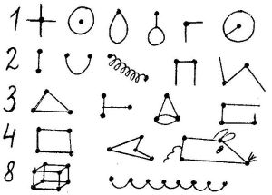
Рис. 1. Изображение отдельных чисел первоклассниками
В математике уже первые диалоги о том, что есть число, показывают, что первоклассникам близко античное понимание числа как образа, как гармоничной формы. Дети изображают различные образы чисел натурального ряда (см. Рис. 1). Эти монстры-изображения близки к образам числа у В. Хлебникова. Как пишет об этом В. В. Иванов, «...большие поэты романтического склада, познакомившись с наукой, представляют ее в бурлящих образах, предвосхищающих будущее науки»12. «Хлебников настаивает на том, что числа для нас могут представать разными явлениями, предметами, лицами»13. Как отмечают ученые, такое отношение к числам «...отличается от того понимания математики, которое, начиная с Евклида, продолжается в европейской науке... Его отношение к числам — эстетическое»14. В.Хлебников слышал «шорох волнующихся чисел», вкушал «сладкое число» и «горечь тройки». С каждым числом связывался вполне конкретный образ-монстр, странное переплетение математических, лингвистических, историко-культурных представлений и — непосредственных ощущений (вкусовых, цветовых, двигательных). В.Хлебников относился к числам событийно, они были для поэта не только феноменом мышления, но и образом сознания, противостоящим ему, поэту и мыслителю, бытийствующим, «самостоящим» зверем, звуком, звоном, запахом. Очень точно это зафиксировал В.В.Иванов: «...хлебниковское восприятие чисел противоположно тому, которое могло бы оказаться характерным для кибернетического века. Для него радость числа – это как бы особая область природы. Их можно наблюдать, они доступны взору, они внушают восторг, |радость, страх. Поэтому наблюдение чисел – для него наука опытная...»15. Вместе с тем, опыты Хлебникова – это не просто субъективные наблюдения – а именно предощущения науки будущего и – одновременно – оживление голосов прошлых культур (Восток, школа Пифагора, которого Хлебников называл своим «последователем», первобытная культура, Новалис, Лейбниц, современная математика – далекие смыслы, как в слове внутренней речи16, в хлебниковских числовых монстрах сближаются, сплетаются, агглютинируются, рождают новые смыслы).
Образы-монстры первоклассников, порождающие отношение к каждому числу как к своеобычному «зверю», затрудняют просто пересчитывание, делают привычное действие счета удивительным, парадоксальным. Само умственное действие (в данном случае – счет) формируется в промежутке между двумя несовместимыми (или – парадоксально совмещающимися) образами числа: число как абсолютно абстрактная точка-метка (нововременное понимание числа) и – число как неповторимая форма (античное понимание числа).
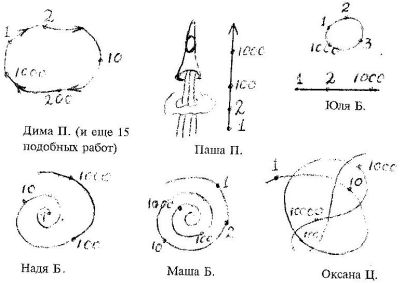
Рис. 2. Образы – монстры бесконечного множества чисел.
Эта трудность углубляется при переходе к образам бесконечного числового ряда. Выясняется, что первоклассники видят бесконечный ряд очень по-разному (рис. 2).Наряду с привычным для нововременного понимания образом бесконечной прямой (который, конечно же, в истории математики первоначально выступил как монстр, взрывающий привычные круговые образы Античности и Средневековья) дети изображают типичные монструозные замкнутые числовые миры. Рука ребенка не повторяет движение от числа «один» к числу «два» и т.д. – до бесконечности, а совершает круговое, возвратное движение, сохраняя идею очень большого числа. В результате очень большое число в изображениях ребят оказывается тождественным единице. Целостный образ бесконечности возвратным движением сохраняет привычный образ линейки, которую можно продолжить. Любопытно, что прямую линию рисуют только три первоклассника, причем двое одновременно изображают ракету, прорывающуюся сквозь плоское небо17. Пятнадцать человек (из двадцати трех ребят, участвующих в работе) видят числовой ряд замкнутым. Трое тяготеют к спиралевидным формам, причем на одном из рисунков в одной точке парадоксально сходятся все очень большие числа (Маша Б.).
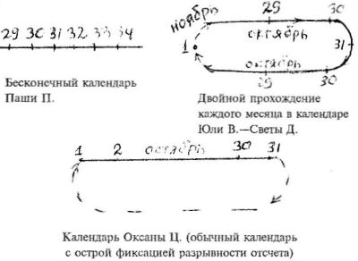
Рис. 3. Разные типы календарей-монстров.
Изучение бесконечного числового ряда в первом классе совпало с введением школьных дневников и календаризацией их. Дети предложили несколько различных типов календарей. В одном из них (Паши П.) обычное циклическое движение дней остраняется с помощью бесконечной прямой. Монстр Паши П. – календарь, для которого необходим только один месяц (см. Рис. 3), тормозит учебное действие календаризации, заставляет задуматься над его основаниями. Почему календари именно такие? Могут ли они быть иными? В результате оригинальный календарь создают Юля В. и Света Д. Это тоже календарь-монстр, странный и необычный по сравнению с общепринятыми. Один и тот же месяц в этом календаре проходился дважды. Но самым сложным и самым интересным в психологическом отношении был календарь Оксаны Ц. Это — календарь с разрывным движением, со скачком: после числа 31 – сразу же 1! Не сразу ученики и даже учитель узнают в образе-монстре Оксаны Ц. … самый обычный, традиционный календарь! Монстры учат детей в самом привычном и обыденном видеть удивительное, парадоксальное, видеть разрывы, трудности, проблемы.
<
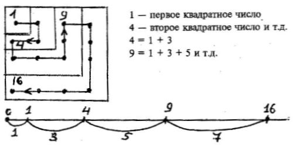
Рис. 4. Возведение числа в квадрат. Античный и нововременной образы математического действия умножения.
Тормозилось, проблематизировалось, обрастало монстрами и каждое арифметическое действие. Например, возведение в квадрат понималось первоклассниками одновременно и как обычное умножение, и – как построение «квадратного числа» (см. рис. 4), как определенное эстетическое обустройство произведения. В результате ребенок опять попадает в промежуток античного (квадрат Пифагора) и нововременного (бесконечная прямая с метками-числами) образов числа. Каждый их этих образов выступает как монстр, как дразнящий голос по отношению к другому образу, не дает ученику остановиться на определенном образе мышления как на единственно возможном, окончательном, итоговом.
Целая ферма разнообразных монстров выросла во втором классе в связи с изучением переменной и уравнения. Дети решали уравнение вида: О + X = Δ, которое само по себе представляет собой монстр по отношению к обычному уравнению с буквами или числами18. На вопрос учителя о том, что же является здесь неизвестным? – дети ответили, что неизвестное здесь все , в том числе и действия. Обостряя ситуацию, второклассник Женя Г. предложил заменить исходное уравнение новым (см. рис. 5).Тем самым возникла новая проблема, и созданный ребенком странный образ-монстр привычного уравнения остранил то, что ранее казалось известным и очевидным – действие. Но на этом дело не окончилось. Решая уравнение, дети пришли к формуле, позволяющей найти неизвестное х. Но многие дети не захотели эту формулу считать решением и потребовали выполнить само вычитание! Это было сделано (см. рис. 5)и даже названо «будкой для собачки» (Семен Г.). Проблемы алгебры здесь ставятся и обостряются с помощью монстров на стуке двух, как минимум, способов математического мышления: геометрической фигурности (решение найдено, если представлено в виде образа) и формализма гильбертовского толка (круг, треугольник – не фигуры, а символы). Ниже мы покажем, как эта проблема вновь всплывает при рассмотрении отрицательных чисел.
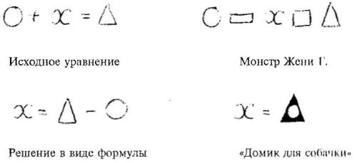
Рис. 5. Формула и форма в решении уравнения второклассниками.
В лингвистике изобретаемые детьми монстры остраняли и проблематизировали такое важное учебное действие, как звуковой анализ. Согласно Д.Б. Эльконину и В.В. Репкину19, обучение чтению и письму в начальной школе начинается с расчленения слова на отдельные звуки, выделения таких качества звуков в виде особых квадратиков. При этом качество отдельного звука, его «самость» теряется, ибо, например, звук «л» и звук «р» обозначаются одинаково (согласный, звонкий, твердый).
Первого сентября первоклассники хором говорят что слово «слон», конечно же, больше, чем слово «карандаш», а слово «удав» намного длиннее слова «червячок». Школа Давыдова видитв этом феномене только языковой натурализм и с помощью тщательно поставленного звукового анализа избавляется от наивного натуралистического видения слова. Но если постараться понять, почему маленькие дети настаивают на странном удлинении слова, если вокруг этого развернуть учебные диалоги, то обнаружится что только часть детей прямо отождествляют слово и предмет, остальные рассуждают тоньше: слово «СЛО...ОН» большое, круглое, значительное, произносится медленно, длинно и округло. Слово «карандаш» произносится скороговоркой оно короткое. Дети наивно ухватывают сразу несколько компонентов «речевого события», взрослые же учат в слове видеть только денотативную функцию, жестко разводя слово и предмет, показывая, что слово лишь обозначает предмет, а само по себе не имеет образа, являясь лишь значком, символом20 (вообще познавательный символизм, рассматривающий понятия лишь как символы, обслуживающие деятельность, – характерная особенность современных педагогических концепций).
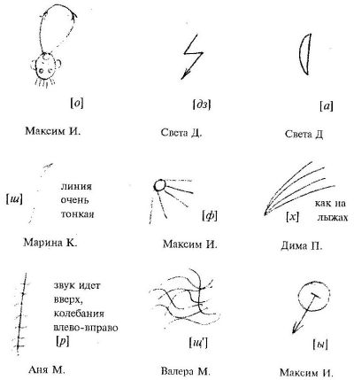
Рис. 6. Образы-монстры отдельных звуков (1 класс)
И опять поражает сходство монстров, созданные детьми, с образами отдельных звуков (и букв), придуманных В.Хлебниковым. Известно, что Хлебников представлял В как вращение одной точки кругом, дугой или по целому кругу или по дуге; 3 – как отражение движущейся точки от черты зеркала под углом, равным углу падения; М – как распад категорий величины на бесконечно малые части, равные в целом первой величине;Г – как наибольшие колебания, вышина которых направлена поперек движения, вытянутые вдоль луча движения21.
Замедленное, продленное восприятие каждого отдельного звука, превращение звука из символа-значка, соединение которых дает слово, в особый себе-тождественный предмет понимания – вот что отличает монстры Хлебникова и монеты первоклассников. Ритм живого созерцания не должен «сняться» в изображении! Поэтому здесь работает не модель, а монстр. Страшный звук «Р» Ани М. – это сплав действия и изображения, «предметное действие открытым текстом», такой образ, в котором изображаемое не расчленяется для аналитического познания, а, напротив, оживляется, дышит, звучит, пугает, является фактом бытия, постоянно возрождающимся как нетождественный мышлению, познанию. В образе страшного звука «Р» страх не снимается, а – навеки удерживается, как аффект, остановленный, удержанный и изображенный с помощью интеллекта. И это возможно только с помощью монстров, но невозможно – в модели.
Возникает вопрос: а понимают ли сами первоклассники, что работают с образами-монстрами, выходят ли они сами на «метаязыковый» уровень речевого события? На наш взгляд, есть основания полагать, что выходят. Приведем пример, когда предметом диалога выступает слово-монстр в его экспрессивной и поэтической функции.
В учебнике В.В.Репкина, с которым работали первоклассники, сеть такое задание: «Является ли слово ПЛИМ настоящим русским словом?»22.
Максим И.: Плим – слово. Его можно писать. Можно его сказать.
Ксюша Ч.: Не слово. Потому что такого слова в русском языке нет. Его мальчик придумал.
Женя Г.: Словом ПЛИМ можно назвать щенка, дружка. Это – слово.
Юля В.: Это «слово» ничего не обозначает. Значит, не слово.
Учитель читает стихотворение В.Хлебникова: «Бобэоби пелись губы, / Вээоми пелись взоры, / Пиээо пелись брови, / Лиээй – пелся облик, / Гзи-гзи-гзэо пелась цепь...»
Ксюша Ч.: Гзи-гзи-гзэо– это страшное, звонкое слово!
У: Слово?
Юля В.: Губы говорят ласково. Губы сами мягкие и говорят мягко, ласкают. А цепь сама твердая и твердо говорит. Здесь каждая вещь сама себя говорит.
Дети: ПЛИМ – одинокое слово. У него нет родственников с тем же корнем. Поэтому ПЛИМ – не слово.
Ксюша Ч.: Родственники у слова ПЛИМ есть! Родственниками слова ПЛИМ являются слова: времирей, гзи-гзи-гзэо, бобэоби, жарирей...23Это семья таких слов. Эти слова – волшебные. Они живут в волшебном лесу. Фью-фью – свистит и веселит. Гзи-гзи-гзэо – путает. Плим – прыгает. Бобэоби – ласкает. Жарирей – приучает людейне бояться солнца. Это семья неизвестных слов.
Любопытно, что одни дети сразу чувствуют, чтоПЛИМ – слово (Максим, Женя). Это – первоклассники, у которых образная, «сознавательная» доминанта превалирует в обучении. Другие (Юля В., Ксюша Ч.) активно сопротивляются, «устраняя» монстры. Но зато, когда поэтическое видение, в ходе напряженного диалога, всеже укореняетсяв сознании «аналитиков», последние дают глубокое «метаобъяснение» того, что сами же не почувствовали в начале.
После таких уроков дети увлеклись самостоятельным придумыванием слов-монстров, в которых смысл превалируетнад значением. Максим М. придумал такое предложение:«Смотрите: идут на рэк. Рэк, рэк, рэк».
Д.: Очень страшное слово РЭК...
У: Почему?
Надя Б.: А запишем его по звукам (рис. 7). Смотрите, все звуки согласные – твердые, и звук Э – из твердого «самолетика»!
Аня М. : И звук Р тоже не просто сонорный, он страшный…
Лена Б.: Вот помните, мы рисовали звуки. И Аня придумала знак для звука Р. Он страшный (дорисовывает схему).
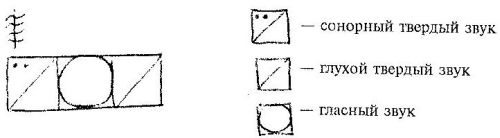
Рис. 7. Изображение слова «РЭК» с помощью модели и с помощью образа-монстра.
Здесь, на этой схеме, прямо сталкиваются нововременной и современный, «хлебниковский» образы звука, модель и монстр. Сталкиваются и взаимно определяют друг друга, оставляя ребенка в промежутке между нововременным и современным видением.
Мы описали две основные функции детских монстров в обучении. Монстры, во-первых, выступают в своей карнавально-пародирующей функции, доводя до абсурда, до парадокса традиционный, привычный образ видения мира, характерный для данного возраста. Во-вторых, монстры оттормаживают каждое учебное действие, останавливают его на пороге осуществления, доводя до парадокса не только целостный образ мира, но и рутинные, привычные орудийные умения и навыки (счет, письмо чтение измерение и пр.).
Вместе с тем, монстры не только доводят сознание и мышление до парадоксальных, диалогических ситуаций, до столкновения логик, но и помогают удержать парадокс в зримой, осязаемой, конечной конструкции. Монстр является образом парадокса. И в этом состоит его третья, важнейшая функция. Монстры удерживают в одном образе разные логические «ходы», связывают в единой конструкции далекие идеи, сталкивают их, сплетают на едином «теле», не дают расположиться разным логическим идеям в параллельных и независимых логических «пространствах». Монстр есть образ диалога логик. Это – диалог логик, сжатыйдо единого, неустойчивого образа-пружины, в которой совмещаются несовместимые логические миры (от античности до наших дней). Как правильно предположилпедагог В.Ф.Литовский, образы-монстры всегда внутренненеуспокоены, вопросительны, тревожны. Даже когда во внешней речи они выглядят как дерзкие утверждения, для самого ребенка это всегда вопросы. Поэтому В.Ф.Литовский назвал детские монстры словами-сфинксами, словами, вопросительными и загадочными прежде всего для самого ребенка.
Монстр – это постоянная возможность развертывания диалога, его необходимость, мучительное желание освободиться, отпустить «пружину», разрешить парадокс в пользу одного из логических «голосов», и – невозможность это сделать. Образ-монстр – это то «психологическое орудие»24, в котором удерживается диалогизм мысли – для самого мыслящего. Это – определение субъекта мысли, субъекта диалога логик.
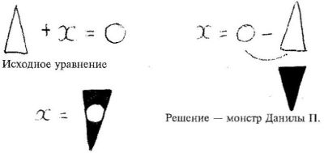
Рис.8. Предощущение парадокса отрицательногочисла.
Приведем пример. Во втором классе перед детьми ставится задача – решить уравнение (см рис. 8). После длительных раздумий и споров предлагаются такие решения.
Валера М.: Х= 0, потому что когда мы таким огромнымтреугольником накроем такой маленький кружочек, то от него ничего не останется. Треугольник съест кружочек, Х=0.
Надя Б., Марина К.: Икс равен кружочек минус треугольник. Это и есть икс. И дальше ничего не нужно считать или рисовать.
Юля В.: Это не решение.
Данила П.: Можно нарисовать вместо минус треугольника треугольник черный, замалеванный и перевернутый. Ну а теперь надо совместить черный треугольник с белым кружочком. Икс – это обязательно черная и перевернутая фигурка, она такая же, как и черный треугольник, смотрит вниз и сама черная. Икс – это кусочек черного перевернутого треугольника.
Изобретая принцип отрицательности – основу диалогического понятия отрицательного числа, дети в своих монстрах воспроизводят те исторические трудности и парадоксы, которые обнаруживали математики. Важно, что отрицательные числа возникают не как «обслуга» тех или иных практических действий (измерение, ориентирование на местности и пр.), а строятся как образы трудности, образы парадокса, не до конца устраненного и после введения знаковой формы понятия25. На уроках-диалогах монстры позволяют ощутить и прожить мучения мысли: отрицательное число понимается как невозможное, немыслимое, и – вместе с тем – насущное.
В экспериментальном курсе природоведения второклассники большой интерес проявили к самостоятельному придумыванию и демонстрированию «фокусов». Фокусы – это рукотворно выстраиваемый парадокс, трудность, «точка удивления». Важно, конечно, что дети не только готовили и показывали фокусы, но и своеобразно интерпретировали их. В этих интерпретациях «всплывали» формы мышления, характерные для античности, средневековья, нового времени.
Юля В. (фокус с яйцом) пишет, что «...яйцо проходит через узкое горлышко, потому что из бутылки выходит воздух, и яйцу некуда деваться. Воздух ушел, и яйцо задыхается».
Женя Г. (фокус с втягиванием воды в стакан, в котором сгорела спичка): «Вода стремится, чтобы потушить огонь. А я думаю, что огонь знает, что он умрет, и всасывает воду в себя».
Данила П. (объяснение опыта со стаканом): «Когда вола туда наливается, в этот, в стакан, там выходит воздух в тарелку, и воду из тарелки держит как бы пластилином или клеем прижимает к тарелке».
Паша Г. (объяснение фокусов с градусником): «Когда тепло, спирт поднимается вверх, потому что его заставляет подниматься какая-то сила. Там есть невидимая веревка, она держит камешек. Спирту становится жарко. Когда жарко, камешек тяжелеет, опускается вниз, а к другому концу привязан спирт, веревка его поднимает. Камешек тоже невидимый».
Надя Б.: «Я думала, что градусник неживой, и там есть невидимые веревочки, которые тянут ртуть. А вот, когда я смотрела за молоком, то мне показалось, что и молоко, и градусник очень похожи на маленького ребеночка, живого, на моего братика, когда он ползет. И я поняла, что градусник живой и похож на маленького ребеночка».
Здесь мы должны отметить еще одну функцию монстров. Монстры являются своеобразными пред-произведениями, сочинениями детей по математике, естествознанию, литературе и пр.Монстры выступают в качестве внутренней основы, «мотора» таких произведений. И это – еще одно отличие монстра от модели. Модель всегда общая, одна на всех. Модель не имеет автора. Модель не адресована никому и не несет в себе черт речи создателя. Монстры же, являясь психологическими орудиями диалога, удерживают именно индивидуально-неповторимое видение проблемы вот этим учеником (Данилой П. или Надей Б.). Монстры выстраиваются по законам речевых жанров, хотя своим предметоммогут иметь естественно-научные и математические проблемы и парадоксы. В этом отношении монстры воспроизводят структуру научных произведений (в отличие от моделей, которые строятся аналогично учебным произведениям, учебникам). В отличие от учебников, научные произведения(Платона и Галилея, Бора и Эйнштейна) сохраняют в себе не только результаты, но и путь к ним, внутреннюю логику исследователя, тупики и парадоксы, словом, засташигюг читателя пройти вместе с автором напряженный пугь к открытию.
Как нам кажется, не только мышление в горизонте диалогических понятий (числа или предмета природы), нои восприятие художественных произведений подразумеваетстроительство монстров — собственных микропроизведений. Известно, что овладение человеческой речьюстановится возможным лишь тогда, когда ребенок начинает играть со словом, выстраивать слова-монстры, не существующие в родном языке, но, вместе с тем, открывающие ребенку «порождающую грамматику» родногоязыка. Эти словесные монстры глубоко индивидуальны26. При усвоенииязыка «ребенок, как показали психолингвистические исследования, не руководствуется системой категорий «взрослого языка», а создает собственные категории слов, основанные на ихфункциональных особенностях внутри его индивидуальной языковой системы»27. Грамматики-монстры служат теми психологическими «лесами», которые удерживают личностное отношение к языку, делают язык как бысобственным произведением ребенка. Особенноявно это видно напримере усвоения поэтического языка.
...Первоклассники несколько раз читают стихотворение Бориса Пастернака «Снег идет»: Снег идет, снег идет./
К белым звездочкам в буране / Тянутся цветы герани / За оконный перелет. / Снег идет, и все в смятенье / Все пускается в полет, / Черной лестницы ступени, / Перекресткаповорот…
Затем малыши пытаются записать то, что запомнили. Появляются произведения-монстры. Не забудем, что это — начало декабря, и дети только учатся писать.
Паша К: Снег идёт, снег идёт, снег идёт, идёт и / все в метели снег густой густой снег...
Надя Б.: ... снег идёт и все в снетели все пуска в полёт черны лесницы ступени пириплёстка паварот снег идёт снег идёт словна падают нихлобы а захлабы А захлобы.
Аня М.: ...играя впрятки / сгонит небо счердака / потомушто жизн / неждёт наеглянися / невзлятки.
В этих работах можно обнаружить тоособое сжатие поэтического текста во внутренней речи ребенка, которое и образует образ-монстр, тосвоеобразное звучание произведения в сознании каждого ученика. Этот образ-монстр сохраняет ритмический рисунок произведения, а в затруднительных случаях недеформирует поэтическую ткань исходного стихотворения, а продуцирует новые, свои слова: переплесток, захлобы. Интересно, что дети понимают смысл этих слов. Например, Максим И. объяснил, что переплестоки перекресток – это разные слова: в метели все переплетается, воти получается переплесток Мы видим, что дети вновь возвращаются к хлебниковским образам и мыслительным «проходам».
В концеянваря первоклассники слушали три стихотворения изцикла «Стихи о царе Иване» Д.Самойлова, а затем– написалисвои «сгущения», то, что понялии услышали.
Паша П.: Помирает царь, кровавый царь, колокол звенит, весело Молодому звонарю.
Женя Г.: Помирает царь. Где слуги твои? Я убил. Сам убил? САМ убил. САМ убил.
Света Д. : Помирает царь, православный царь. Голос колокозвонный заглушает звон колоколов. Раскачал звонарь.
Помирает царь, православный царь. Голос колокозвонныйзаглушает звон колоколов.
Помирает царь, православный царь. Голос колокозвонныйзаглушает звон колоколов.
Миниатюра Светы Д. заслуживает особого внимания. В ней вполне осознанно выкристаллизована форма троекратного повтора, причем сам процесс кристаллизации сохранен.
Во втором классе дети могли создавать «сгущения» гораздо более близкие основному поэтическому тексту, но все же – своеобразные, монструозные. Сравним исходный текст Б. Пастернака и сгущение-монстр второклассницы Лены М.
Б.Пастернак Сказка. Встарь, во время оно, / В сказом ном краю / Пробирался конный / Степью по репью...
Лена М.
Встарь во время бора,
В сказочном краю
Пробирался Конный
Степью по репью.
Не хотел до смерти,
Убивать змею.
Но ведь конь не дрался,
Никогда в бою.
Лес ревет от боя,
Конь жует траву.
Второклассники превращали в пред-произведения даже ответы на классические анкеты и тесты психологов. Так, например, Женя Г. на вопрос методики «неоконченных предложений»28«Когда я говорю с человеком, мне хочется, чтобы он…» ответил: «…жил и не умирал. Жил и жил».
Опыт создания мостров-пред-произведений позволил младшим школьникам интересно переводить с украинского. Украинский язык вообще выступал в нашем экспериментальном обучении как язык, отстраняющий важные фонематические и фонетические особенности языка русского. Например, качество русского звука «ч», легко усваивалось путем противопоставления его твердому украинскому «ч» и пр. Многие, казалось бы, самоочевидные правила произношения и правописания нарушаются в украинском языке, а, следовательно, становятся странными и удивительными в русском, перестают быть привычными. К концу второго класса дети из русского города Красноярска свободно читали по-украински. Тогда мы всерьез занялись переводами. Приведем пример перевода фрагмента Л.Украинки.
Л.Україка
Надiя
Нiдолi, нiволiу мене нема,
Зосталася тiльки надiя одна:
Надiя вернутись ще раз на Вкраїну,
Поглянути ще раз на рiдну країну,
поглянути ще раз на синiй Днiпро.
Там жити чи вмерти менi все одно.
Помимо бросающихся в глаза трудностей – невозможно по-русски передать игру слов «Вкраїа» (Украина) — «країна» (страна) — «Разве Украина – страна? Украина – это же город!» — удивляется Лена Б.; – здесь мы имеем делосо стихотворением, насыщенным глубоким и не столь уж понятным детям содержанием. Но — и это спасение — содержание пропущено через «игольное ушко» формы — и в затруднениях перевода ощущаются и потом уже и осмысляются трудности содержания. Украина — не страна (по-русски!). Но Україна – країна (по-украински, для украинца).
Профессиональная переводчица В.Звягинцева переводит так:
Ни доли, ни воли мне жизнь не дала,
Одна лишь, одна мне надежда мила:
Увидеть опять Украину мою
И все, что мне любо в родимом краю.
На Днепр голубой погядеть еще раз,
А там все равно – пусть умру хоть сейчас29.
Аня М создает перевод-монстр. Она вовсе отказывается от слова «Украина», понимая, что без слова «країна» оно не будет центральным, сдвинется на периферию стиха (как у В.Звягинцевой). Главным героем стихотворения у Ани М. является Днепр:
Перевод Ани М.
Нет в жизни моей ни счастья, ни воли,
Осталась лишь только надежда одна,
Хочу поглядеть на берег Днепра,
Где краткое детство без доли промчалось.
Там у родного Днепра голубое дно,
Мне умирать или жить все одно.
Введение новой темы детства позволило Ане М. «растянуть» рифму «воли-доли» и перенести воспоминания на берег Днепра, а потом замкнуть их на дне Днепра — с размышлениями о судьбе и счастье-воле и — с предощущением смерти. При этом изобретается сильная строка: «Там у родного Днепра голубое дно» (родного — «задержанный » до поры перевод слова «рiдну»; голубое, а не синее — потому что это не только смерть на дне, но и воспоминания о детстве на берегу) и созвучие «дн» — объединяющее ї на звуковом, болевом, бессознательном уровне Дн епр, ро дн ого, дн о, д етство, д олю. «Тесней, чем сердце и предсердье», зарифмовывется родина и Днепр, детство и дно, рождение и смерть. Именно так рифмовала: «Вкраїна — країна — Українка» поэтесса. Аня в поэтическом монстре находит русский эквивалент: « Все одно ».
Наконец, еще об одном свойстве монстров, впервые подмеченном И.Е.Берлянд. То, что на уроке в первом-третьем классе выступает как странный образ, как дразнилка, как остранение привычного умственного действия, как образ парадокса, как внутренний мотор произведения – в другой культуре (первобытной, античной, средневековой, нововременной, на высотах культуры 20-го века) выступает как магистральная форма сознания и мышления , как «естественный» способ создания произведений.
С этой точки зрения понятной становится гипотеза В.С.Библера30о том, что «завершение» тех мыслительных процессов, которые начинаются на уроках-диалогах в первом-втором классе, может быть осуществлено только в том случае, если предметом освоения в более старших классах являются целостные культуры (от античной до современной). Мало сказать, что в детских монстрах «всплывают»31формы сознания античного философа или средневекового алхимика, и поэтому дети, оказываясь в промежутке различных умонастроенностей (а этот промежуток и удерживается энергией монстра), вынуждены мыслить самостоятельно. Глубинный смысл монстров может быть понят и из развертывания той сферы сознания, к которой тяготеет их создатель, ребенок. Как это возможно осуществить в начальной школе, не дожидаясь, пока ребенок повзрослеет и попадет «в свой» класс Школы диалога культур (античный или нововременной), в класс, где культура, наиболее близкая ему с детства, окажется главным предметов освоения? На наш взгляд, здесь можно пойти по пути новосибирского психолога и педагога Э.Н.Горюхиной, т.е. по пути проведения межвозрастных уроков-диалогов, на которых монструозные реплики младших школьников «подхватываются» и развиваются, во-первых, дошкольниками, которые ярче, чем школьники, чувствуют слово-вещь, слово-действие, слово-ритм, слово-образ, и, во вторых, старшими школьниками, осваивающими античную, средневековую и т.д. культуры. Такие уроки мы проводили и у себя.
...Десятиклассники и второклассники обсуждают тексты Пифагора, спорят о том, почему число является началом всего. Свой монстр предлагает Семен Г.: «Начало всего—ясам. Мое начало настоящее, потому что я родился, живу. Я вижу, слышу, думаю, ощущаю, значит я живу. Вот мое — настоящее — начало».
Второклассники не поняли своего товарища Семена Г. Помогла поддержка десятиклассников, которые и вывели разговор на проблемы античной культуры и античных на чал. Вне этого контекста монстр второклассника Семена Г. «повис бы в воздухе», выполнил бы только карнавализующую и отстраняющую функцию, но не стал бы отправной «точкой» размышлений в контексте иной культуры.
...На уроке природоведения второклассники задумались: отчего зимой идет снег?
Юля Ф.: Так природа создала, что уж зимой должен быть снег, а весной — дождь.
Валера М.: Вначале вверху идет дождь. И каждая капелька зимой замерзает и превращается в снежки. Ты возьми снег в руку. Сними рукавицу, подставь ладонь. Когда снежинка упадет в руку, она сделается водой.
У: Ну и что? Разве снег и лед — это одно и то же? Вспомните, какие снежинки! Разве это — льдинки? Попробуйте дома заморозить немного воды. Разве получатся снежинки ?
Урок прерывается. Дети проделают дома опыты и посмотрят, что получится. Проходит несколько дней. И дети приносят в школу кусочки льда, замороженные ими самими. Действительно, эти льдинки совсем не похожи на снег, это явно не снежинки... Значит, все не так просто. Снег — это не просто замороженная вода. Каждый обьект природы: снежинка, льдинка — должны быть поняты как самотождественные, а не сведены к другому объекту. Снежинка, оказывается, хранит в себе тайну собственного происхождения.
Данила И: В космосе — холодно. И из космоса падает космический лед, и капельки чуть-чуть растаивают и в тоже время замерзают. И получаются красивые снежинки. Снежинки могут получаться только из космического льда (рис. 8а).
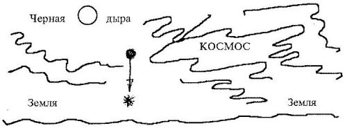
Рис. 8а. Происхождение снежинки из космического льда(Данила П.).
Юля В.: Вода тяжелая и лед из нее получается тяжелый.А снежинка — вон какая легкая! Снежинка не изводы. А из природы. Вот мы не знаем, как произошла Земля, так мы и не знаем, как произошла снежинка.
Маша Б.: Снежинка – кусочек тучки. Природа говорит тучке: отдай кусочек! И будет снежинка (Рис. 8б).
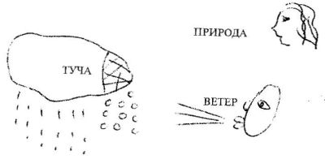
Рис. 8б. Происхождение снежинки по Маше Б.: Природа говорит, чтобы от тучки летели снежинки, а Ветер разносит их по свету
На одном и том же уроке два монстра –Данилы и Маши –явно тяготеют к двум разным картинам мира: нововременной (Данила) и античной (Маша). В промежутке этих монстров – загадка снежинки.
Второклассники строят модель выражения: Х+4. Юля В. предлагает такую схему: (см. рис. 9). Быстро выясняется32, что эта схема не вполне правильна – мы ведь не знаем, чему равен X, а по схеме его можно легко определить. Как же быть? Можно, например, отрезок обозначающий неизвестное, рисовать «с разрывом» Некоторые дети предлагают рисовать X в виде растягивающейся и сжимающейся «жвачки». При этом учебное задание переопределяется, обсуждение выходит за рамки первоначально поставленной проблемы. Дело в том, что растяжение-сжатие теперь может осуществляться в разных направлениях, и полученные рисунки – это уже не модели исходного уравнения… Вдруг руку поднимает Коля К. Он утверждает, что весь исходный отрезок Х+4 – это одна единица. Учитель предлагает объясниться, показывая, что единица на рисунке уже есть — это четвертая часть отрезка «4»…
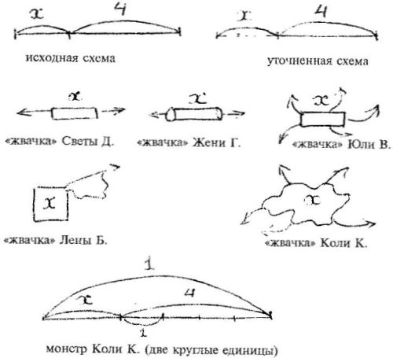
Рис. 9. Этапы размышления над моделированием выражения Х+4
У.: Как же так? Неужели число 4 меньше, чем единица?
Коля К.: Меньше.
У.: А вот эта единица, четвертушка четверки, и эта твоя большая единица – они тоже разные?
Коля К.: Они одинаковые.
У.: А тебя не смущает, что одна вот такая большая, а другая – маленькая? Почему так?
Коля К.: Потому что все это – круглое. Единица – круглая.
У.: Почему она круглая?
Коля К.: Закругленная, целая.
У.: Но все-таки, эта большая единица, твоя, и маленькая – разные?
Коля К.: Одинаковые.
У.: Почему? Я вижу глазом, что разные – маленькая и большая!
Коля К.: Потому что это тоже круглая, только меньше.
У.: Это уменьшенная копия той единицы, да?
Коля К.: Да.
У.: Можно ли сказать так, Коля, что никаких чисел нет, есть только единицы?
Коля К.: Можно.
У.: Все числа – единицы. Есть вот такая единица, такая (показывает отрезки разной длины), и все они целенькие и закругленные. Каждое число – это своя единица. Это ты хочешь сказать, Коля?
Коля К.: Да.
На наш взгляд, весь этот урок представляет собой поэтапное преобразование обыденных приемов размышления – в способы понимания, близкие к античным. И этому помогают именно монстры разных родов.
Первый монстр был предложен И.Е.Берлянд, которая, присутствуя на уроке, заметила, что Х нельзя изображать конкретным отрезком. Она предложила изображать его отрезком с разрывом. Это – как бы первый шаг в изображении проблемы. Первый шаг по переходу от модели, общей для всех и являющейся способом решения задачи (исходная схема) – к индивидуально-неповторимым изображениям-монстрам, которые, напротив, обнаруживают в уже решенной задаче – трудную проблему. Второй шаг сделали дети, предложив изображать Х не отрезком, а «жвачкой». Подключились сложные топологические трудности, идеи размерности. Все сразу стало сложным и интересным. Наконец, Коля К. делает третий шаг по «эйдетизации» учебной ситуации. Как это показала и.Е.Берлянд, Коля К. в своих высказываниях, «перпендикулярных» ко всему диалогу, во-первых, создает фон , на котором работает другое, отличное от Колиного, понимание числа, и тем самым позволяет остранить его; во-вторых, удерживает для всего класса понимание числа и величины, связанное с феноменами Пиаже, – и тем самым удерживает дошкольное видение – в школе; в-третьих, – Коля работает «впрок», на «античные классы», когда понимание числа, близкое к предлагаемому Колей, станет центральным для понимания античной математики33.
Наблюдая за ходом наших уроков, И.Е. Берлянд предположила наличие у некоторых ребят определенных логических «амплуа», близких к той или иной культуре. Так, почти все высказывания «тугодума» Коли, в принципе малоспособного к быстрому воспроизведению знаковой формы понятия и поэтому постоянно десимволизирующего учебное действие, превращающего символ — в образ проблем — являются как бы предощущением античной культуры. Монстры Коли — это всегда именно «ощупывание числа руками», создание математических, языковых, природоведческих образов, в которых всматривание, действование еще не успокоено, не снято знаком или символом. Аналогичны мыслительные способности Семена Г. Они проявляются не только в обсуждениях на «античные темы» (напомним, что Семен считает, что начало всего — он сам и на этом основании вступает в спор с Пифагором и Фалесом), но и в работах, прямо не связанных с античной проблематикой. Приведем пример сочинения Семена, в котором особенности его речевого мышления выглядят наиболее отчетливо.
Неудачный день
«У меня все хорошо, нету неудачных дней, папа не ругает и всегда разрешает телевизор смотреть допоздна, и на улицу отпускает тоже допоздна. К бабушке езжу и отдыхаю там нормально, и в школе тоже нормально учусь. И в деревню езжу, малину ем с сахаром, она вкусная, малина».
В этом сочинении «на заданную тему» второклассник Семен Г. обнаруживает способность создать образ такой непосредственной силы, что слово «малина» в конце рассказа просто вырывается из листа, простится на ладонь — попробуй! И это именно античная филологическая особенность! Именно в трудах античных философов «...каждое слово чуть ли не на глазах у читателя выхватывается для терминологического употребления из родной стихии быта и еще трепещет, как только что выловленная рыба»34. Характеризуя античную философскую мысль, С.С.Аверинцев отмечает: «Только воплощаясь в слове, перебарывая сопротивление слова, присваивая его энергию, мысль впервые «приходит к себе», обретает внутреннюю действительность, а не просто внешнюю сообщимость»35.
Можно констатировать, что монстры , создаваемые школьниками, действительно являются как бы «порождающими грамматиками» той или иной культуры, отличной от современной, но привлекаемой ребенком для решения современных учебных проблем. Отчасти это и порождает феномен «монструозности»: то, что было бы естественным стилем размышлений для античного математика или историка, выглядит странным и пародоскальным в устах Коли К. или Семена Г. Аналогично то, что было естественным, скажем, для Николая Кузанского, размышлявшего на грани средневековой и нововременной культуры и понимавшего любой объект (например, треугольник) доведением его до бесконечных форм, выглядит странным и необычным в устах пятиклассника Вани Я., изобретшего треугольник, у которого все высоты пересекаются в бесконечно удаленной точке. Монстры — это странные голоса других культур в культуре школы двадцатого века. Очень интересным является вопрос о происхождении таких странных «всплываний». На наш взгляд, источник существования античной, средневековой и нововременной культур в мышлении современного ребенка нужно искать в дошкольном детстве. Дошкольник как бы играет разными формами мышления. При этом, конечно, происходит и интериоризация: мифы, если их рассказывают взрослые, актуализируют и укрепляют античные возможности мысли и речи; сказки, легенды, ритуалы, суеверия, «приметы» (ср. Баратынский) — средневековые; занятия в детском саду, в том числе опыт измерения, звукового анализа и пр. — нововременные. Но этими возможностями дошкольника мало кто интересуется. Это пока — монстры «в себе». Лишь в школе, в условиях диалогического обучения, монстры могут стать центральным феноменом учебной деятельности.
Заканчивая, позволим и себе два монстра. Один — культурологический, второй — педагогический.
...Поль Валери, сравнивая поэзию и прозу, заметил, что в прозе мы обращаемся за помощью к языку, он выражает наш приказ, и выполнив наше поручение, пропадает36. Понимание уничтожает слово: как только оно понято, в нем больше нет нужды. Не то в поэзии. Слово в поэзии никуда не ведет. Оно не может с легкостью стать не-словом: способом действия, символом, знаком... Оно стремится к неизменности формы и принуждает нас воспроизводить его таким, каково оно есть.
Нельзя ли предположить, что в культуре двадцатого века есть как бы два радикально отличных и взаимодополнительных «полюса»: так сказать, прозаический и — поэтический. Первый полюс — это полюс моделей, символов, знаков, обслуживающих потребности практической деятельности.
Второй полюс — это полюс монстров, парадоксализующих деятельность, важных независимо от последующего «ввинчивания» в практику, выявляющих историко-культурные основания деятельности. Вспоминая полотна Пикассо и Сальвадора Дали, стихотворения Велемира Хлебникова, литературоведческие изыскания В. Шкловского, физические образы-монстры в спорах Бора и Энштейна, историко-математические идеи Лакатоса — нельзя ли предположить, что культура двадцатого века (в отличие от цивилизации) интересуется, по преимуществу, монстрами, а не моделями. Может быть, именно поэтому, делая культуру (а не цивилизационные формы) предметом обучения в школе, мы и получаем монстр в качестве важнейшего определения учебной деятельности?
И — второе. Удивительной все же является аналогия детских монстров с монстрами Велемира Хлебникова. Нельзя ли учебник для первоклассников представить себе в виде совокупности текстов Хлебникова о загадках слова, числа, предмета природы? Это будет учебник, пронизанный мыслью Хлебникова, иллюстрированный рисунками Шагала, Филонова, Малевича... Учебник, автором которого был бы Хлебников? Собственно говоря, почему бы нет?
1 Возрастные возможности усвоения знаний. М., 1966.
2 Давыдов В.В. Проблемы развивающего обучения. М., 1986.
3 Библер В.С. Мышление как творчество. М., 1975.
4 Библер B.C. Школа диалога культур. «Советская педагогика», 1988, №11.
5 5 Курганов С.Ю. Психологические проблемы учебного диалога // «Вопросы психологии», 1988, № 2; Курганов С.Ю. Ребенок и взрослый в учебном диалоге // «Народное образование», 1989, № № 2, 4, 5; Курганов С.Ю., Литовский В.Ф. Учебный диалог как форма обучения. Психология, Киев, 1983, вып. 22; Курганов С.Ю., Соломадин И. М. Учебный диалог и психологическое исследование мышления // Методологические проблемы оснований науки. Киев, 1986.
6 Лакатас И. Доказательства и опровержения. М., 1967.
7 Библер B.C. Галилей и логика мышления Нового времени // Механика и цивилизация 17-19 вв. М., 1979. С 490; Библер В.С. Мышление как творчество. М., 1975. С. 103.
8 Курганов С.Ю., Литовский В.Ф. Учебный диалог…
9 Курганов С.Ю. Ребенок и взрослый …
10 Там же.
11 Курганов С.Ю. Психологические проблемы учебного диалога.
12 Иванов В.В. Хлебников и наука // Пути в незнаемое. М., 1986.
13 Там же. С. 394.
14 Там же. С. 397.
15 Там же. С. 402.
16 См. Выготский Л.С. Собр. соч. Т. 2. М, 1982. Как нам представляется, теоретическое понимание внутренней речи Л.С. Выготским во многом отражает практику создании образов-монстров В.Хлебников. Но это — тема особого разговора. Мышление в диалогических понятиях двадцатого века в математике, лингвистике, физике и –поэтическое мышление, «внутреннюю речь открытым текстом» сближает В.С.Библер (Библер B.C . Мышление как творчество. С. 384.
17 Как не вспомнить, что «снаряды пробили небо замкнутой аристотелевской вселенной. Снаряды сформировали гелиоцентрическую систему…». «Только в модели «выстрел – полет - удар» могли сформироваться такие идеализации, как «материальная (а затем математическая) точка»; … возможность «продвижения в бесконечность» … исходных определений механического движения» (Библер В.С. Галилей и логика мышления Нового времени. С. 484 и 480). В детских монстрах всплывает голос мышления Нового времени.
18 В планировании, проведении и обсуждении уроков-диалогов во втором классе БЭСШ № 106 г. Красноярска принимали участие московские психологи: И.Е. Берлянд, Ю.В.Громыко, В.И. Слободчиковиков, Д.Б.Эльконин, Г. А.Цукерман, С.Ф.Горбов.
19 Эльконин Д.Б. Как учить детей читать. М., 1976. Жедек П. С., Репкин В.В. Из опыта изучения закономерностей русской орфографии //Обучение орфографии в восьмилетней школе. М., 1974.
20 В качеств отправной точки для построения курса языка в школе В.В. Давыдова - В.В. Репкина выбрана концепция М.В. Панова (Панов М.В. Современный русский язык. Фонетика. М., 1979), ориентированная на нововременное понимание слова как исключительно предмета познания и аналитического расчленения. Мы исходим из представлений о слове как о точке удивления, как о понятии-проблеме, формируемой в контексте речевого события. Речевое событие, как это показал Р.Якобсон, есть со-бытие взаимодополняющих функций языка: коммуникативной, апеллятивной, поэтичес-
кой, экспрессивной, фатической и метаязыковой (Якобсон Р. Лингвистика и поэтика // Структурализм: «за» и «против». М. 1975. С. 203). Существенно, что поэтическая функция языка не может быть, на наш взгляд, представлена лишь как отдельный предмет освоения (ср.: Айдарова Л.И. Психологические проблемы обучения младших школьников русскому языку. М., 1978. С.31). Поэтические, «хлебниковские» определения слона должны быть включены с самого начала в состав таких действий, как звуковой и фонематический анализ. При этом, конечно, анализ превращается в диалог аналитического и поэтико-синтетического мышления. Но это единственная возможность выстроить на уроке именно речевое событие как встречу разных функций и определений языка в одном месте и в одно и то же время.
21 Хлебников В. Художники мира! // Хлебников В. Творения. М., 1986.
22 Репкин В.В., Левин В.А. Русский язык. Учебные задания и упражнения для 1-го класса. Харьков, 1978. С. 109, упр. 173.
23 Обучение чтению в первом классе было пронизано стихотворениями.В.Хлебникова (см.: Хлебников В. Избранное. М., «Детская литература», 1988. С. 7, 27, 28, 31, 36, 48-50), поэтому свободное владение словами-монстрами из В.Хлебникова было естественным для первоклассников.
24 Выготский Л.С. Собр. соч. Т. 3. М.., 1983. С. 85 и др.
25 В этом отношении мы вступаем в спор с нашими собственными исследованиями 70-х гг., выполненными в русле идей В.В.Давыдова, ср.: Боданский Ф.Г., Курганов С.Ю., Фешенко Т.Н. Формирование всеобщего способа действия // Вестник Харьковского ун-та № 155, 1977.
26 Чуковский К. Стихи и сказки. От двух до пяти. Μ., 1986.
27 Негневицкая Е.И., Шахнарович А.М. Язык и дети. М., 1981. С. 50.
28 Методика С. Братченко.
29 Украинка Л. Лесовая песня. Пер. с укр. М., 1988.
30 Библер В.С. Школа диалога культур // Советская педагогика, 1988, № 11.
31 Гипотезу о том, что культурологические собеседники (античные, средневековые и т.д.) могут не только «погружаться» в сознание учащихся, но и всплывать в репликах младших школьников, пронизывать их собственные размышления, сформулировал педагог В.Ф. Литовский.
32 На этом уроке присутствовала и участвовала в обсуждении психолог И.Е.Берлянд. Она обратила наше внимание на то, что Х надо изображать с разрывом.
33 Берлянд И.Е. Из уроков С.Ю.Курганова во 2-м классе Школы диалога культур // Школа диалога культур. Идеи. Опыт. Проблемы. Кемерово, 1993.
34 Аверинцев С.С. Классическая греческая философия как явление историко-литературного ряда // Новое в современной классп ческой филологии. М., 1979. С. 47.
35 Там же.
36 Поль Валери. Слово о поэзии // Альманах Поэзия, № 52, М, 1989. С. 208-209.